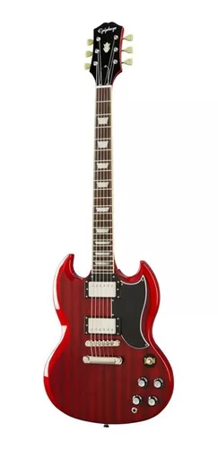
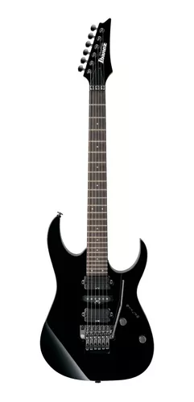
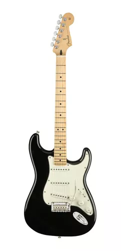
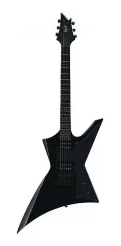
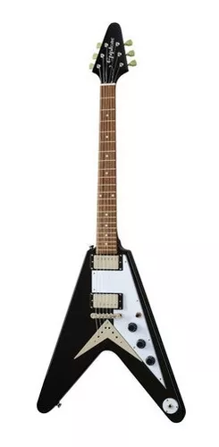

Guitarras Disponibles en Este Momento

 La Gibson SG es un modelo de guitarra eléctrica sacada al mercado en 1961 (como la Gibson Les Paul SG)1 por Gibson, y que sigue en producción desde entonces junto a sus muchas variaciones. La SG Standard es el modelo de guitarra más vendido de Gibson.2
 a. El mercado japonés queda desabastecido, por lo que el importador decide en 1935 empezar a fabricar guitarras españolas por su cuenta y las distribuye con el nombre "Ibanez Salvador". Luego cambió el nombre a "Ibanez".
 La Fender Stratocaster, popularmente conocida como Strat o Strato, es un modelo de guitarra eléctrica diseñado entre 1952 y 1954 por Leo Fender, Bill Carson, George Fullerton y Freddie Tavares. Siendo fabricada y comercializada por Fender Musical Instruments Corporation desde 1954 a la actualidad. Es una guitarra de doble cutaway
 Gibson Explorer, o X-plorer (desde 2002) es una guitarra eléctrica de cuerpo macizo fabricada por Gibson. Fue presentada en 1958, como desarrollo de un prototipo previo denominado «Futura». Se pretendía con ella introducir en el mercado un modelo de líneas radicales e inspiración futurista, como ocurría con sus hermanas, la Flying V y la Gibson Moderne. Inicialmente fracasó y dejó de fabricarse en 1959. Sin embargo, en 1975, Gibson comienza la reedición de la Explorer debido al éxito de diseños similares de otras compañías.
 La Gibson Flying V es una guitarra eléctrica popular lanzada al mercado en el año 1958 por Gibson. Su principal característica es su diseño en forma de "V" invertida, siendo comúnmente utilizada por guitarristas de heavy metal.